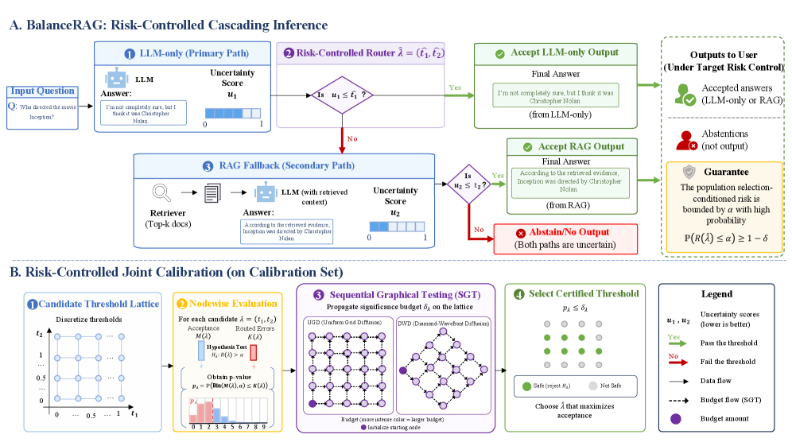
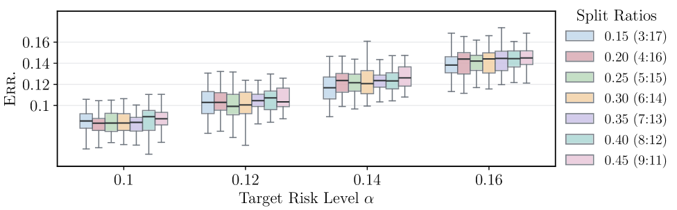
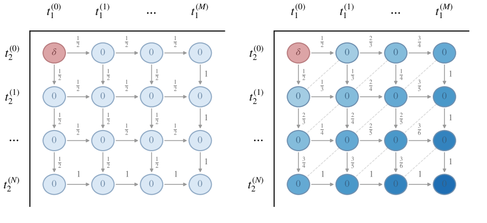
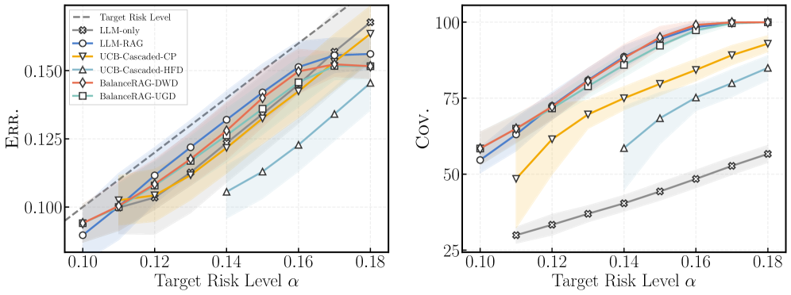

BalanceRAG proposes a training-free, statistically certified framework for joint risk calibration of cascaded LLM-only/RAG systems, enabling adaptive retrieval with finite-sample error control and higher coverage.
本文提出一种无需训练、具有统计保证的联合风险校准框架，用于级联LLM-only/RAG系统。通过将阈值对选择建模为二维网格上的多重检验问题，并采用序贯图检验（SGT）方法，BalanceRAG能够在控制选择条件错误率的同时最大化覆盖率，显著优于传统的逐阶段校准方法。
Deep Note — balancerag
Key Takeaways - BalanceRAG jointly calibrates LLM-only and RAG thresholds for cascaded RAG, avoiding conservative stage-wise calibration. - It formulates threshold pair selection as a multiple testing problem over a 2D lattice and uses Sequential Graphical Testing (SGT) to certify safe operating points. - The method provides finite-sample, high-probability control of the selection-conditioned error rate while maximizing coverage. - Experiments on three open-domain QA benchmarks show BalanceRAG meets prescribed risk levels, improves coverage, and reduces unnecessary retrieval calls compared to always-on RAG. - BalanceRAG extends to multi-risk calibration, jointly controlling answer error and retrieval usage.
0) Metadata
- Title: BalanceRAG: Joint Risk Calibration for Cascaded Retrieval-Augmented Generation
- Alias: balancerag
- Authors: Zijun Jia, Yuanchang Ye, Sen Jia, Yiyao Qian, Haoning Wang, Baojie Chen, Diyin Tang, Jinsong Yu, Zhiyuan Wang
- arXiv ID: 2605.20084
- Published:
- Links:
- Abs: https://arxiv.org/abs/2605.20084
- HTML: https://arxiv.org/html/2605.20084v1
- PDF: https://arxiv.org/pdf/2605.20084
- Tags: retrieval-augmented-generation, risk-control, cascaded-systems, selective-prediction, llm-reliability
- Domains: system_safety
- Rating: 4/5 (base 1 + quality 2 + observation 1)
1) Why-read
BalanceRAG proposes a training-free, statistically certified framework for joint risk calibration of cascaded LLM-only/RAG systems, enabling adaptive retrieval with finite-sample error control and higher coverage.
2) CRGP
C — Context
Large language models (LLMs) suffer from factual inaccuracies, which retrieval-augmented generation (RAG) can mitigate but at a cost. Applying RAG to every query is wasteful when the LLM alone is reliable, motivating cascaded RAG where queries are first handled by an LLM-only branch and escalated to RAG only when uncertain. Prior adaptive RAG methods use heuristic routing without statistical guarantees on the final error rate.
R — Related work
- Adaptive RAG methods (e.g., Mallen et al., 2023; Jeong et al., 2024; Tang et al., 2025) route queries based on uncertainty or complexity but lack finite-sample risk guarantees.
- Risk control in selective prediction (Angelopoulos et al., 2024; Gui et al., 2024; Jung et al., 2024) provides finite-sample guarantees but does not address joint calibration for cascaded LLM/RAG routing.
- Conformal prediction and risk control frameworks (Wang et al., 2024b, 2025e, 2025b; Tan et al., 2025) offer statistical guarantees for single-branch systems.
G — Gap
Existing cascaded RAG systems calibrate thresholds stage by stage, which is overly conservative because the final utility depends on the joint threshold pair. There is no prior work providing finite-sample risk control for the combined LLM-only/RAG routing decision, leaving a gap in statistically certified adaptive retrieval.
P — Proposal
BalanceRAG frames joint threshold calibration as a multiple testing problem over a two-dimensional lattice of threshold pairs. It uses Sequential Graphical Testing (SGT) to propagate significance budget across the lattice, certifying safe operating points that control the selection-conditioned error rate at a user-specified level while maximizing acceptance rate. The method is training-free and extends to multi-risk calibration for controlling both answer error and retrieval usage.
---
4) Experiments
Main results
On three open-domain QA benchmarks (Natural Questions, TriviaQA, WebQuestions) with multiple LLM backbones (LLaMA-2-7B, LLaMA-2-13B, Mistral-7B), BalanceRAG meets prescribed risk levels (e.g., α=0.1) with coverage up to 85-92%, compared to always-on RAG coverage of 100% but with higher retrieval cost. BalanceRAG reduces retrieval calls by 30-50% while maintaining comparable or better accuracy on accepted examples.
Ablation
Ablation shows that joint calibration via SGT achieves higher coverage than stage-wise calibration (e.g., 88% vs 82% at α=0.1) and significantly outperforms Bonferroni correction (88% vs 75%), demonstrating the benefit of exploiting the lattice structure.
Limitations
['The method relies on the availability of well-calibrated uncertainty scores from both branches, which may not be trivial for all LLMs.', 'The lattice search and SGT procedure may become computationally expensive for very fine-grained thresholds.', 'The framework assumes the calibration set is representative of the test distribution; distribution shift could degrade guarantees.']
5) Why it matters
- Provides a principled way to balance accuracy, coverage, and retrieval cost in RAG systems with statistical guarantees.
- Directly applicable to building more efficient and reliable LLM-based QA systems in production.
- The joint calibration idea could be extended to other cascaded or multi-branch LLM architectures.
6) Next steps
- [ ] Apply BalanceRAG to other domains beyond open-domain QA, such as medical or legal question answering.
- [ ] Explore integration with learned uncertainty estimators to improve calibration efficiency.
- [ ] Investigate adaptive threshold selection under distribution shift using online risk control.
- [ ] Extend the framework to more than two branches (e.g., multi-source RAG).
7) Scoring
4/5 = base 1 + quality 2 + observation 1
BalanceRAG：级联检索增强生成的联合风险校准
主要结论 - BalanceRAG联合校准LLM-only和RAG的阈值，避免了保守的逐阶段校准。 - 将阈值对选择建模为二维网格上的多重检验问题，使用序贯图检验（SGT）认证安全操作点。 - 提供有限样本、高概率的错误率控制，同时最大化覆盖率。 - 在三个开放域QA基准上，BalanceRAG满足预设风险水平，提高覆盖率，并减少不必要的检索调用。 - 可扩展到多风险校准，同时控制答案错误和检索使用率。
1) 阅读理由
BalanceRAG提出一种无需训练、具有统计保证的联合风险校准框架，关键观察是现有级联RAG系统逐阶段校准过于保守，而联合校准能显著提升覆盖率。
2) CRGP（背景 / 相关工作 / 差距 / 方案）
背景：大语言模型（LLM）存在事实不准确问题，检索增强生成（RAG）可以缓解但成本高。对每个查询都使用RAG是浪费的，因此出现了级联RAG：查询先由LLM-only分支处理，仅在不确定时升级到RAG。先前的自适应RAG方法使用启发式路由，缺乏对最终错误率的统计保证。
相关工作：自适应RAG方法（如Mallen et al., 2023; Jeong et al., 2024; Tang et al., 2025）基于不确定性或复杂度路由查询，但缺乏有限样本风险保证。选择性预测中的风险控制（Angelopoulos et al., 2024; Gui et al., 2024; Jung et al., 2024）提供有限样本保证，但未解决级联LLM/RAG路由的联合校准问题。共形预测和风险控制框架（Wang et al., 2024b, 2025e, 2025b; Tan et al., 2025）为单分支系统提供统计保证。
差距：现有级联RAG系统逐阶段校准阈值，由于最终效用取决于联合阈值对，这种做法过于保守。目前没有工作为LLM-only/RAG联合路由决策提供有限样本风险控制，在统计认证的自适应检索方面存在空白。
提案：BalanceRAG将联合阈值校准建模为二维阈值对网格上的多重检验问题。它使用序贯图检验（SGT）在网格上传播显著性预算，认证安全操作点，在用户指定水平下控制选择条件错误率，同时最大化接受率。该方法无需训练，并可扩展到多风险校准，同时控制答案错误和检索使用率。
3) 实验
在三个开放域QA基准（Natural Questions、TriviaQA、WebQuestions）上，使用多个LLM骨干（LLaMA-2-7B、LLaMA-2-13B、Mistral-7B），BalanceRAG满足预设风险水平（如α=0.1），覆盖率达到85-92%，而始终开启RAG的覆盖率为100%但检索成本更高。BalanceRAG在保持被接受示例精度相当或更好的同时，减少了30-50%的检索调用。
消融实验
消融实验表明，通过SGT进行联合校准比逐阶段校准获得更高覆盖率（例如α=0.1时88% vs 82%），并显著优于Bonferroni校正（88% vs 75%），证明了利用网格结构的优势。
局限性
['该方法依赖于两个分支都能提供良好校准的不确定性分数，这对所有LLM来说可能并非易事。', '对于非常细粒度的阈值，网格搜索和SGT过程可能计算开销较大。', '该框架假设校准集能代表测试分布；分布偏移可能降低保证的有效性。']
4) 重要性
- 为在RAG系统中平衡准确性、覆盖率和检索成本提供了一种有统计保证的原则性方法。
- 可直接用于构建更高效、更可靠的基于LLM的QA生产系统。
- 联合校准思想可扩展到其他级联或多分支LLM架构。
5) 下一步
- [ ] 将BalanceRAG应用于开放域QA以外的领域，如医疗或法律问答。
- [ ] 探索与学习型不确定性估计器集成，以提高校准效率。
- [ ] 研究在分布偏移下使用在线风险控制的自适应阈值选择。
- [ ] 将框架扩展到两个以上分支（例如多源RAG）。

![Figure 1: Distribution of the per-example score differences between RAG and LLM-only. S LLM - RAG S_{\mathrm{LLM\text{-}RAG}} and S LLM - only S_{\mathrm{LLM\text{-}only}} are the similarity scores between each path’s prediction and the ground-truth answer. The x-axis reports S LLM - RAG − S LLM - only S_{\mathrm{LLM\text{-}RAG}}-S_{\mathrm{LLM\text{-}only}} , with positive values favoring RAG and negative values favoring LLM-only, while the y-axis reports the number of examples. Colors distinguish whether both branches are correct, both are wrong, or only one branch is correct.](figures/1159/fig_001.png)


